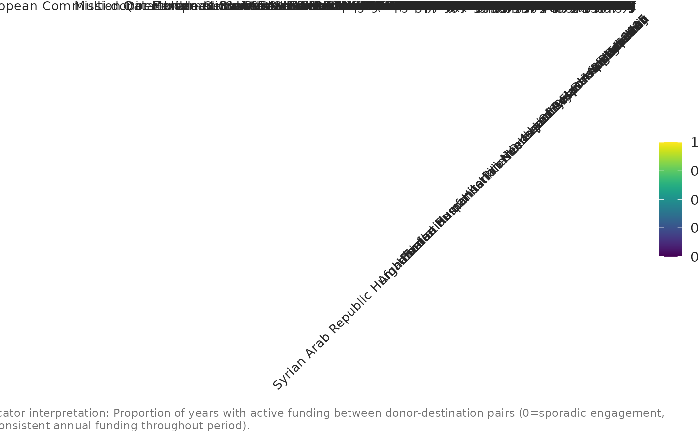

Donor→Destination: Geographic Stability Index
Source:R/indicator_donor_destination_stability.R
indicator_donor_destination_stability.RdCalculates the fraction of years a donor funds a destination out of all years they have any funding relationship. Higher values indicate sustained, long-term donor engagement.
Examples
# Compute indicator
donor_destination<- indicator_donor_destination_stability(flows)
# Identify top 15 destinations by number of active donors or total flows
top_destinations <- donor_destination |>
dplyr::group_by(destination) |>
dplyr::summarise(total_stability = sum(DonorDestination_Stability_Index,
na.rm = TRUE)) |>
dplyr::arrange(desc(total_stability)) |>
dplyr::slice_head(n = 15)
stability_top <- donor_destination |>
dplyr::filter(destination %in% top_destinations$destination) |>
dplyr::mutate(
destination = factor(destination, levels = top_destinations$destination),
donor = factor(donor)
)
# ---- ggplot2 visualisation ----
ggplot2::ggplot(
stability_top,
ggplot2::aes(
x = destination,
y = donor,
fill = DonorDestination_Stability_Index
)
) +
ggplot2::geom_tile(color = "white") +
viridis::scale_fill_viridis(
name = "Stability (0–1)",
option = "viridis",
limits = c(0, 1),
na.value = "grey80"
) +
ggplot2::labs(
title = "Donor → Destination Geographic Stability Index",
subtitle = "Share of years each donor funded a destination
(0 = occasional; 1 = consistent every year)",
x = "Destination",
y = "Donor",
caption = paste(
"Indicator interpretation:",
"Proportion of years with active funding between donor-destination pairs
(0=sporadic engagement, 1=consistent annual funding throughout period).",
"\n\n",
"How to read the visualization:",
"Heatmap shows funding consistency patterns. Darker colors indicate stable
long-term donor engagement in specific crisis contexts.", "\n\n",
"Humanitarian relevance:",
"Identifies donors providing predictable funding to specific crises,
enabling long-term programming and sustainable response capacity building.",
"\n\n",
"Source: Financial Tracking Service (FTS) API."
)
) +
unhcrthemes::theme_unhcr(grid = "Y", axis = "X", axis_title = FALSE) +
ggplot2::theme(
axis.text.x = ggplot2::element_text(angle = 45, hjust = 1),
panel.grid = ggplot2::element_blank(),
legend.position = "right"
)
